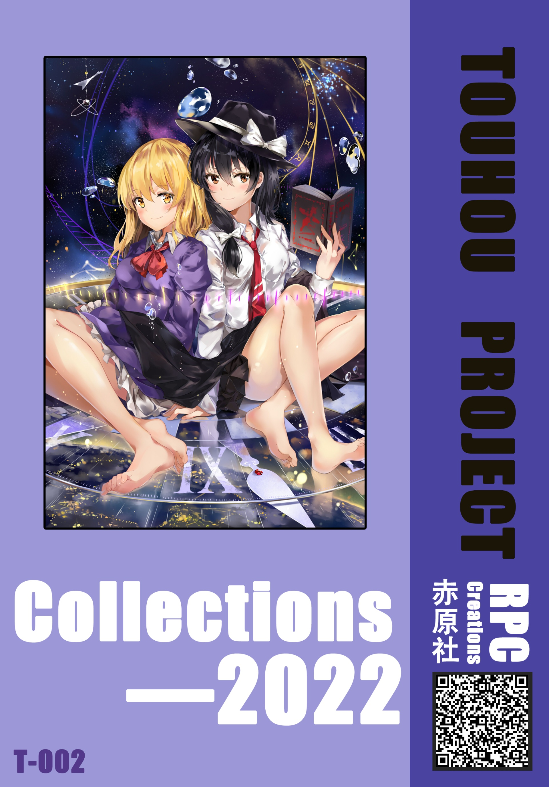
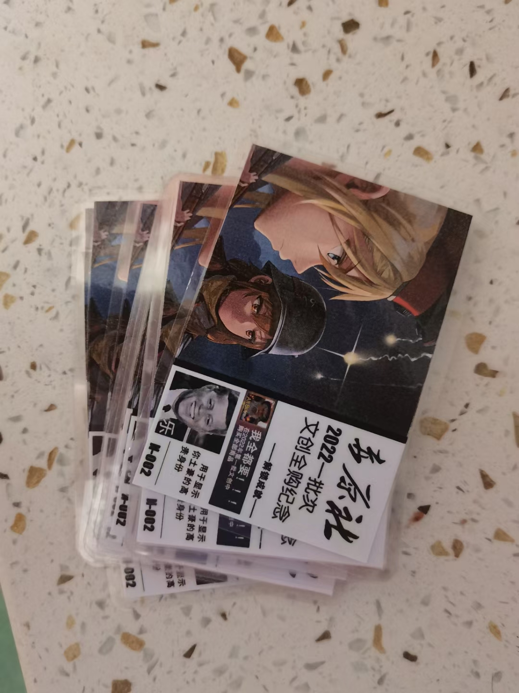
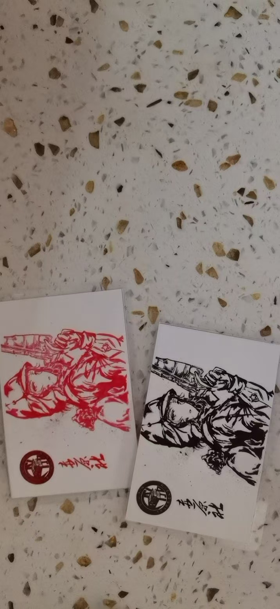

特别文档
涉及部分原因撤销的旧网站资源汇总
此板块浏览需访问权限，请谨慎浏览，不可随意截图，复制，传播，避免造成不可控后果
因涉及敏感原因，本版所有非图文资源全部作废，仅保留相关图片，留作纪念，禁止任意复制、传播
- 档案
-
[原包头九中赤原社]
原赤原社和赤原文创各项决议文件记录
赤原社 招新 2022 记录照片
[展开详情]
- 文创
-
[赤原文创]
赤原文创
RedPlainClub-Creations
赤原社 文创产品 RPC-Creations:Collections 2022 手账本 A5size 封面图[PNG]
[点此获取]
赤原社 文创产品 RPC-Creations:Collections 2022 文创全购纪念卡 一批次 N-002[预览 T-002 Front]

赤原社 文创宣传 RPC-Creations: 2022 招新特供 明信片 5.5cm*8.8cm 双色版[实物图]

赤原社 文创宣传 2022校内招新 宣传图&海报&社徽[PNG/JPG][实物图]

[点此获取]